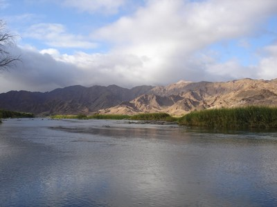
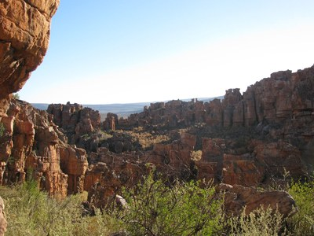
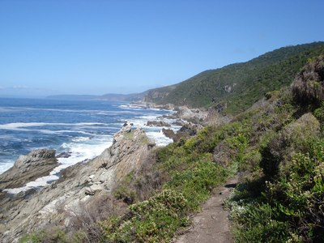
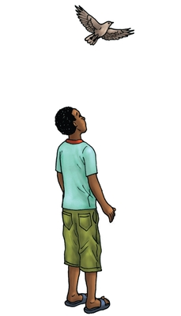
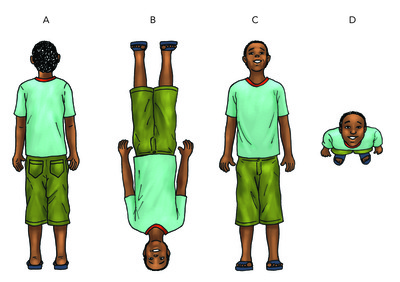
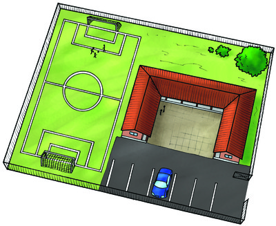
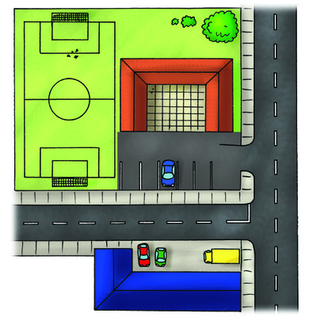
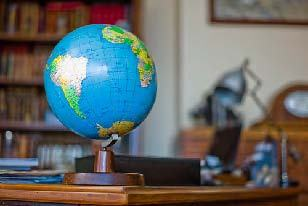
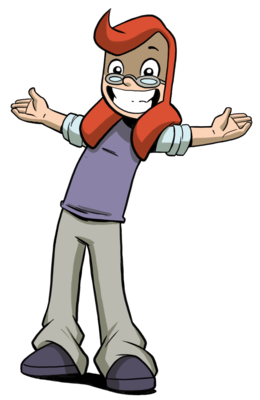
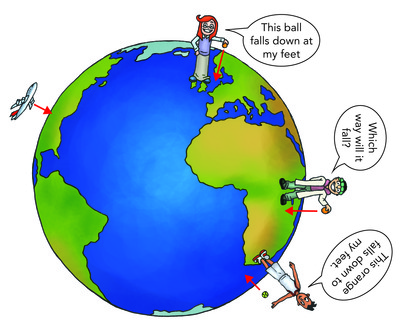

Die aarde is in die vorm van 'n bal. Hoekom val ons dan nie van die bal af nie?
As die aarde in die vorm van 'n bal is, waarom lyk dit plat?
Wat is die verskil tussen 'n vasteland en 'n eiland?
Is 'n oseaan en 'n see dieselfde ding?
NB. Die laaste afdeling van hierdie versameling gaan oor die maan. Die volgorde is effens anders as in CAPS sodat jy nie aan die einde van die jaar te min tyd het om die Ontwerpsaktiwiteite oor 'n model vuurpyl te doen nie. Daar word 'n paar belangrike vaardighede in die aktiwiteit onderrig. As jy egter verkies om by die volgorde in CAPS te hou, kan jy dit doen. Die hoofstuk oor die maan vereis dat leerders 'n maanwag moet doen waar hulle die maan moet dophou en die verandering in die vorm van die lig van die maan vir 'n maand lank moet neerskryf. Hou dit in gedagte vir die 4e kwartaal aangesien jy die aktiwiteit al 'n maand voor die hoofstuk oor die maan moet begin sodat dit betyds kan klaar wees.
Kenmerke van die maan
Herinner jou leerders dat die aarde vir ons plat of gelyk lyk as ons buite rondkyk. Vra jou leerders om hulle te verbeel hoe die aarde sou lyk as hulle baie, baie hoog in die lug opgaan. Baie van hulle het al beelde van die aarde gesien wat soos 'n bal lyk. Hierdie foto's is vanuit 'n ruimtetuig geneem. Hulle kan maklik vir jou sê: "Dit is die aarde" ,maar dis moeiliker vir hulle om vir jou te sê waar op die aarde hulle op die oomblik is. Dit is nie omdat hulle nie die vastelande ken nie, maar omdat dit vir hulle moeilik is om 'n kopskuif tussen in die ruimte wees en op die aarde wees te maak. Dit is hoekom ons in hierdie afdeling tyd spandeer om hulle te leer om vanuit verskillende perspektiewe na voorwerpe te kyk. Dit is 'n verstandelike vaardigheid wat normaal ontwikkel wanneer kinders omtrent 10 of 11 is en ons, as onderwysers, moet seker maak dat leerders dit wel ontwikkel.
Die aarde is ons tuiste. Dit is die planeet waarop ons bly. Dit is 'n baie spesiale planeet en daarom kan ons daarop bly. Kom ons kyk wat maak die aarde so spesiaal.
Kenmerke van die aarde se oppervlak.
Die aarde is die plek waar alle mense bly. Die grond onder jou voete is deel van die aarde. Ons lewe op die aarde se oppervlak. Die oppervlak is die buitekant van die aarde. Myners grawe diep tonnels onder die oppervlak van die aarde.
Plante groei in grond. Die grond kom van rots wat diep onder die grond was. Die reën was die grond weg en dit lê die rots bloot. Ons sê die reën verweer die grond en die rots soos dit stukkie vir stukkie afbreek en weg was.
Soos die reën die oppervlak van die aarde verweer (erodeer) vorm dit heuwels en valleie, riviere en seë. Kyk na die volgende prente wat die verskillende kenmerke van die aarde se oppervlak wys.

Die Oranjerivier

Daar is baie rotse in hierdie landskap.

Die rotsagtige seestrand van die Tuinroete, daar is styl kranse, rotse en die oseaan.
Onthou jy dat ons na die habitatte van die aarde gekyk het in Kwartaal 1 in die hoofstuk Lewe en Bestaan? Hierdie habitatte word deur die kenmerke van die aarde beïnvloed.
Habitatte van die aarde
INSTRUKSIES:
Kyk weer na die prente op die bladsye voor die aktiwiteit, wat die verskillende kenmerke van die aarde se oppervlak wys.
Beantwoord die vrae hier onder.
VRAE:
Noem van die lewende dinge wat jy op die aarde sal kry.
Plante en diere is die kort antwoord. Maak seker dat leerders egter vir jou 'n klomp voorbeelde gee. Voorbeelde soos: bome, bosse, grasse, die voëls in die bome, insekte wat deur die voëls geëet word, bokke, ens. Bevestig nou die idee van lewende dinge, want jy gaan hulle moet leer hoe die son lig en hitte vir lewende dinge gee.
Waar bly die voëls in die prente?
In die bome, op die strand en die oewer van 'n rivier, party dryf op die water en ander duik vir vis.
Waar bly die visse in die prentjie?
In die rivier en die see.
Waar kan beeste bly?
Langs die oewer van die rivier, op die grasvelde
Watter soort diere kan in 'n woestyn bly? 'n Woestyn is 'n droë plek met amper niks water nie.
Slange, vlermuise, meerkatte, jakkalse is 'n paar voorbeelde.
Watter soort diere bly in woude?
Buffels, olifante, bosvarke, ape is 'n paar voorbeelde.
'n Habitat is 'n plek waar diere kos, water en skuiling kan vind en hulle kleintjies kan hê. Habitatte het unieke kenmerke, soos die rotsagtige kushabitat wat golwe en groot rotse het. Noem vier habitatte wat jy in die prente gesien het .
Riviere, seë, grasvelde, woude, berge
Noem vier nie-lewende dinge wat jy in die prent sien.
Die kenmerke soos lug, wolke, en riviere is almal nie-lewende dinge. Baie leerders sal dit nie glo nie; hulle dink byvoorbeeld dat riviere en wolke lewende dinge is. Herinner hulle aan wat hulle in Kwartaal 1 in Lewe en Bestaan geleer het.
Die aarde het lug in sy atmosfeer. Lug is oral om jou en dit beweeg. Wanneer lug beweeg, noem ons dit wind. Jy weet wanneer lug beweeg, want jy kan die wind voel blaas. As jy in die lug opkyk, sien jy partykeer wolke. Die wolke beweeg in die lug. Alhoewel jy nie die lug kan sien nie, is dit nog steeds 'n kenmerk van die aarde, net soos rotse en grond wat berge en heuwels vorm en die water wat die riviere, seë en mere vorm.
Is daar lug hoog in die lug? Gee 'n rede vir jou antwoord.
Baie leerders sal saamstem dat daar lug om ons neuse is, maar mag onseker wees of daar lug onder die tafel is; nog meer sal onseker wees of daar lug hoog in die lug is. Hulle mag dalk sê dat jy die atmosfeer daar bo kry, maar hulle is onseker of daar lug is. Hulle verstaan nie dat die atmosfeer al die lug op die aarde is nie.
Is wolke almal ewe hoog?
Sommiges is baie hoog, ander is laer. Ons wil hê kinders moet begin dink hoe dit sou wees om baie hoog op te gaan - ons wil hê hulle moet binnekort begin dink hoe die aarde vanuit 'n ruimteskip sal lyk.
Partykeer is dit moeilik om die kenmerke van die aarde te sien as ons laag op die grond staan. As jy byvoorbeeld in 'n vallei staan sal jy nie al die omringende berge kan sien nie. Die kenmerke van die aarde lyk ook anders afhangend van waar vandaan jy daarna kyk. Dink jy 'n voël in die lug sal dieselfde landskap sien as jy wat op die grond staan? Kom ons kyk.
Hoe lyk dinge van bo af?
BENODIGHEDE:
potlood
kleurpotlode
uitveër
INSTRUKSIES:
Kom ons kyk wat sien die voël as hy oor die seun vlieg. Kan jy sien hoe vlieg die voël oor die seun in die prent hier onder?
Beantwoord die vrae wat volg.

VRAE:
Wat sien die voël as dit afkyk? Kies die regte prentjie uit (a), (b), (c) of (d) deur 'n kring om dit te trek. 
Hier ontwikkel jy leerders se vermoë om hulself verstandelik op 'n ander plek te sit en voor te stel hoe dinge daar lyk. Dit is 'n verstandelike vermoë wat hulle moet aanleer om die modelle van die sonnestelsel te verstaan.
Verbeel jou jy is 'n vlieg op die klas se dak. Jy kyk af en sien die hele klaskamer. Teken die klaskamer soos die vlieg dit sien in die spasie hier onder. Teken die witbord, die kas, die deur en die onderwyser se tafel. Jy hoef nie die mense te teken nie. Jy kan kleur gebruik as jy wil.
Die taak ontwikkel die leerder se vaardighede om dinge vanuit 'n ander perspektief te visualiseer. Jy mag vind dat slegs 'n paar leerders die kenmerke van die klaskamer van die dak af kan visualiseer. Baie leerders kan byvoorbeeld die kas teken asof hulle dit van voor af sien. Hulle moet egter die kas van bo af teken. Hulle sou die deure kon sien as hulle bo-op die kas was, maar hulle moet egter die goed teken wat hulle bo-op die kas sien.
Die volgende prent wys jou hoe 'n skool lyk as 'n voël bo-oor dit sou vlieg.

Die skoolgronde soos die voël dit sien.
Van die voorwerpe in die prentjie het reeds byskrifte. Skryf die letters A, B, C en D op die prent om die regte voorwerpe te benoem.
A is die hek.
B is die skool se dak.
C is die sokkerveld.
D is die boom.
'n Vliegtuig vlieg oor dieselfde skool. Die prent wys jou hoe die skool vanuit die vliegtuig lyk; die vliegtuig vlieg hoër as die voël. 
Die skoolgronde soos iemand wat in 'n vliegtuig wat laag oor die skool vlieg dit sou sien.
Soek nou die sokkerveld. Benoem die sokkerveld op die prent.
Waarom is die sokkerveld kleiner as in die prent wat wys wat die voël sien as dit oor die skool vlieg?
Ons is nou baie hoër, so dinge lyk kleiner.
Vind die winkel. Dit is oorkant die skool. Wat kan jy buite die winkel sien?
Die antwoord is karre. Die leerders moet aflei dat die ander gebou 'n winkel is.
Die vliegtuig vlieg nou hoër in die lug. Jy kan nou sien hoe lyk die hele dorp vir die mense in die vliegtuig wat baie hoog vlieg.
Die dorp soos dit vir die mense lyk wat hoog in die vliegtuig vlieg.
Benoem die rivier, die pad en die wolk in die prent.
Die leerders moet aflei dat dit 'n rivier, 'n pad en 'n wolk is. Dit het nie byskrifte nie. Om afleidings van prente en teks te maak is 'n prosesseringsvaardigheid.
Wat ons in hierdie aktiwiteit gesien het, is dat hoe hoër jy gaan, hoe kleiner lyk voorwerpe. Wanneer foto's vanuit 'n vliegtuig of helikopter geneem word, kry ons 'n beter idee van die kenmerke van die aarde se oppervlak omdat ons meer kan sien. As ons selfs hoër gaan, selfs tot in die ruimte, kan ons nie meer in 'n vliegtuig gaan nie. Dan moet ruimtevaarders in 'n ruimtetuig opgaan. In die prent hier onder sien jy hoe Suid-Afrika vir die mense in 'n ruimtetuig hoog bo Suid-Afrika lyk.
Dit is wat mense in 'n ruimtetuig sien as hulle van die ruimte af na Suid-Afrika kyk.
Kyk na die aarde vanuit die ruimte.
Kyk nou na die prent. 'n Ruimtevaarder in 'n ruimtetuig het die foto geneem.
Planeet Aarde. Dit is hoe die aarde lyk vanuit 'n ruimtetuig hoog bo die aarde.
VRAE:
Watter vorm is die aarde?
Dit is so rond soos 'n bal. Vra hulle wat hulle nog in die lug sien wat rond lyk. (Die antwoord is die maan)
Vind Afrika in die foto. Wys dit uit met jou vinger.
Wat is die blou dele van die foto?
Die oseane ook genoem die seë.
Wat is die wit goed in die foto?
wolke
Waar is die Aarde se lug in die foto?
Die lug is soos 'n dun vel oral oor die planeet. Jy kan 'n blouerige ring om die rand van die aarde sien.
Is daar meer see of droë land op die oppervlak van die aarde. Kyk na die prent hierbo om jou antwoord uit te werk.
Daar is meer seë (oseane) as droë land. Die leerders kan nie die ander kant van die aarde sien nie, maar jy kan hulle vertel dat daar omtrent twee maal meer see as droë land is.
Vastelande en eilande
'n Vasteland is een groot stuk land op die aarde. 'n Vasteland het baie lande. Afrika is 'n vasteland met meer as 50 lande.
Die aarde het sewe vastelande, hulle is:
Afrika
Noord-Amerika
Suid-Amerika
Asië
Europa
Australië
Antarktika
Op watter vasteland bly ons?
Afrika
Weet jy wat 'n aardbol is? 'n Aardbol is 'n model wat wys hoe die aarde lyk. Die aardbol wys jou waar die vastelande en die oseane van die aarde is. Die blou dele van die aardbol is die oseane. Soms is dit moeilik om van die verskillende dele van die aarde te praat sonder om te weet hoe dit lyk, daarom gebruik ons 'n aardbol.

'n Aardbol is 'n model wat jou wys waar die vastelande is.
Vir die volgende aktiwiteit is net een aardbol nodig. Vra jou leerders om in groepe vorentoe te kom om die oefening te voltooi. As jy nie 'n aardbol kan kry nie, kan jy 'n kaart gebruik. 'n Aardbol is egter verkieslik aangesien die leerders die vorm van die aarde kan sien.
Vind die vastelande op die aardbol.
BENODIGHEDE:
'n aardbol
die klas het net een aardbol nodig
INSTRUKSIES:
Vind die vasteland van Afrika op die aardbol. Wys die rante van Afrika met jou vinger.
Wys met jou vinger waar Suid-Afrika in Afrika is.
Wys waar hierdie lande op die aardbol sit: Namibië, Mosambiek, Zimbabwe en Botswana. Hulle is almal buurlande.
Die prent hier onder is 'n plat kaart van al die vastelande. Dis is hoe die vastelande lyk as jy die papier met die vastelande van die aardbol aftrek en dit op die tafel neersit. Vind die vastelande op die aardbol en skryf hulle name op die plat kaart.
'n Eiland is land met water reg rondom dit. Madagaskar en Mauritius is Afrika-lande wat eilande is.
Eilande
BENODIGHEDE:
'n Aardbol of 'n atlas.
Inligting oor 'n eiland van jou keuse.
Prente van die eiland.
Kleurpotlode
Skêre
INSTRUKSIES:
Kyk in jou atlas of op jou aardbol en vind 'n eiland langs die kus van Suid-Afrika.
Bring inligting oor daardie eiland skool toe.
Jou inligting moet al die volgende vrae dek.
Wat is die naam van die eiland?
Op watter kus van Suid-Afrika is die eiland?
Watter Suid-Afrikaanse stad of dorp is die naaste aan die eiland?
In watter oseaan is die eiland geleë?
Hoe groot is die eiland?
Bly daar mense op die eiland? Hoekom/hoekom nie?
Waarom is die eiland belangrik?
Waarom is 'n eiland nie 'n vasteland nie?
Gebruik die spasie voorsien om 'n inligtingsbrosjure oor die eiland te maak
Wat is die verskil tussen 'n vasteland en 'n eiland?
'n Vasteland is 'n stuk land wat uit baie lande bestaan. 'n Eiland is 'n klein stukkie land omring deur water. Dit is of 'n deel van 'n land of net een land.
Die oseane en seë
Die meeste van die aarde is met water bedek, jy kan dit op 'n kaart sien. Wanneer ruimtevaarders in die ruimte ingaan, lyk al die water op ons planeet meestal blou. Dit is waarom ons die aarde die Blou Planeet noem.
Vind die oseane op die aardbol.
BENODIGHEDE:
'n aardbol
INSTRUKSIES:
Draai die aardbol om en vind die volgende oseane: Indiese, Atlantiese en Stille Oseaan.
Skryf nou die name van die drie oseane op die plat kaart van die wêreld.
VRAAG:
Is daar meer droë land of meer water op die aarde se oppervlak?
Daar is meer water as droë land.
Baie mense gebruik beide die woorde "oseaan" en "see" wanneer hulle van die oseaan praat. Wanneer ons egter van die aarde se oppervlak praat, is dit belangrik om te weet dat daar 'n verskil tussen die oseaan en die see is.
'n Oseaan is 'n groot watermassa wat 'n groot deel van die aarde se oppervlak bedek. 'n See is baie kleiner as 'n oseaan en is gewoonlik aan party kante omring met land.
Die aarde in die ruimte.
Die aarde is 'n planeet in die ruimte. Van die aarde af kan ons die son, maan en die sterre sien. Die ruimte begin omtrent 100km bo die aarde se oppervlak. Die ruimte is 'n baie vreemde en onbekende plek vir ons. Dit is hoekom mense al vir duisende jare so belangstel in wat in die ruimte aangaan. Daar is geen lug in die ruimte nie.
Ek het baie GROOT vrae oor die ruimte! Jy het seker ook.
Kom ons kyk na die aarde in verhouding met die ruimte.
Dit is die eerste keer wat die konsep van die ruimte aan jou leerders bekend gestel word in terme van ons plek in die ruimte. NASA het 'n fantastiese webtuiste vir bronne, prente en aktiwiteite vir leerders. Al die NASA-prente is sonder kopiereg vrygestel en jy kan hulle vrylik gebruik wanneer jy wil. NASA se webtuiste is http://www.nasa.gov en die webtuiste is gerig op kinders waar daar pret speletjies en aktiwiteite is http://www.nasa.gov/audience/forkids/kidsclub/flash/index.html.
Dis aarde is soos 'n bal gevorm.
Ons het gesien dat die aarde soos 'n bal lyk. Iets wat die vorm van 'n sokkerbal het, word 'n sfeer genoem. Ons sien die vorm van die aarde as ons baie hoog en ver weg van dit beweeg. So byvoorbeeld kan 'n ruimtevaarder in 'n ruimtetuig die vorm van die aarde sien as hulle uit die ruimtetuig se venster na die aarde kyk.
As ons egter by die klaskamer se venster uitkyk, lyk die aarde plat, nie soos 'n bal nie. Lank terug het baie mense geglo die aarde is plat, omdat dit plat lyk. Dit is so groot dat ons nie kan sien dat dit geboë is nie.
Verbeel jou jy is 'n mier op 'n sokkerbal. Jy is so klein dat die bal plat lyk. Jy kan nie die anderkant van die bal sien nie, en jy kan nie sien dat dit 'n bal is nie. Kyk na die prent van die mier op die sokkerbal. Al wat die mier kan sien is 'n plat oppervlak. Hy weet nie eers dat hy op 'n ronde bal is nie omdat dit soveel groter as hy is.
Dit herinner ons dat ons nie in die wetenskap direk van 'n observasie na 'n gevolgtrekking kan gaan nie.
The ant on the ball sees a flat surface as it is so small compared to the ball.
Dit is dieselfde vir ons op die aarde. Ons is so klein in vergelyking met die aarde dat wanneer ons op die oppervlak staan, die aarde vir ons plat lyk. Ons kan nie sien dat die aarde eintlik rond is nie tensy ons na prente kyk wat uit die ruimte geneem is.
Hoekom val ek nie van die aarde se oppervlak af as ek in Suid-Afrika,wat naby aan die onderpunt van die sfeer is, staan nie?
As die aarde 'n bal is, waarom val ons nie van die aarde af nie?
Dit kan 'n klasbespreking wees en dien as 'n inleiding tot gravitasie. Dit kan as 'n ope vraag gelos word wat in die volgende aktiwiteit aangespreek word.
Watter kant van die aarde is bo en watter kant is onder?
Hierdie is 'n uitbreidingsaktiwiteit, alhoewel dit die basiese vraag, hoekom ons nie van die aarde afval nie, aanspreek.
BENODIGHEDE:
Die klas se aardbol
'n potlood
'n uitveër
INSTRUKSIES:
Lees die paragraaf en beantwoord die vrae.
Wanneer 'n potlood van die tafel afval, val dit omdat die aarde en die grond mekaar aantrek deur gravitasiekrag. Gravitasiekrag trek alles na die middel van die aarde toe aan. Onthou dat die aarde soos 'n bal gevorm is. Die prent wys jou in watter rigting gravitasie voorwerpe trek.

Jojo, Sophie en Tom staan regop op die aarde.
Kyk weer na die klas se aardbol en vind Suid-Afrika en Engeland op die aardbol.
Kyk nou na die prent: dit wys vir Jojo wat in Suid-Afrika staan. Wanneer hy die bal laat val, val dit na sy voete toe en hy sê die rigting is 'n afwaartse rigting.
Kyk nou na Sophie in Engeland. Wanneer sy 'n lemoen laat val, val dit na haar voete toe en sy sê dat dit 'n afwaartse rigting is. So vir altwee is die afwaartse rigting reguit na die middel van die aarde toe.
VRAAG:
Vind die Kongo op die aardbol en kyk dan na die prent. Tom staan in die Kongo. Trek 'n pyl wat wys in watter rigting die bal uit Tom se hand sal val.
Leerders behoort die pyl te teken dat die punt na die middel van die aarde wys. Die bal sal na sy voete toe val, met ander woorde na die middel van die aarde toe. Party leerders sal egter 'n pyl trek wat na die onderkant van die bladsy wys. Wys vir hulle die aarbol en wys na die middel van die aardbol van albei kante af. Jy wys in die rigting van gravitasiekrag.
Af beteken "na die middel van die aarde"! Daar is 'n krag wat alle voorwerpe na mekaar toe trek. Dit word gravitasie genoem. Ons word na die middel van die aarde getrek as gevolg van gravitasie.
Die aarde is 'n planeet. Daar is sewe ander planete wat om die son beweeg.
Die kenmerke van die aarde is die land met die berge en valleie, die water in damme, mere, riviere en seë, en die lug oral om die aarde.
Groot dele land word vastelande genoem en dele land wat water reg rondom het, word eilande genoem.
Lewende dinge groei op die land en in die water. Die aarde het baie habitatte vir die klomp verskillende lewende dinge wat daar bly.
As ons hoog bo die aarde gaan, lyk alles anders as wanneer ons op die grond staan.
'n Persoon se neus, oë en mond is kenmerke van sy of haar gesig. Noem vier kenmerke van die aarde.
Land (berge, heuwels, valleie) water (oseane, seë, riviere, mere), lug (wolke)
Die aarde is soos 'n bal gevorm. Mens val nie van die bal af nie. Waarom nie?
Die afwaartse rigting is die rigting wat na die middel van die aarde wys. Gravitasie trek almal na die middel van die aarde aan.
Laat leerders toe om enige taal waarin hulle vlot is te gebruik en leer hulle dan later die Afrikaanse of Engelse woorde.
As ons in die dag in die lug opkyk, sien ons voorwerpe daar bo. In die nag sien ons ander voorwerpe daar.
Voltooi die tabel. Die eerste twee antwoorde is klaar gedoen.
Goed wat ek in die dag kan sien.
Goed wat ek in die nag kan sien.
Voëls
Sterre
wolke
maan
vliegtuie en helikopters
vliegtuie met ligte aan
son
meteore, maar net soms
reenboë
satelliete
die Maan. Jy kan dit soms in die dag sien. Party kinders mag jou dalk nie glo nie, hulle dink mens kan die maan net in die aand sien. Jy kan die klas laat stem oor of hulle dink dit waar is of nie. Vra hulle dan om mooi te gaan kyk - die leerder wat die maan in die daglig sien kan die hele klas buitentoe roep om te gaan kyk!
Planete. Die meeste Graad 4 leerders sal weet van planete. Venus is 'n planeet, maar baie mense noem dit die aand- of oggendster.
Watter van hierdie goed wat jy in die tabel geskryf het is hoër as die ander goed? Skryf dit in volgorde neer: skryf daardie ding wat naaste aan die grond is, eerste en die ding wat die hoogste is, laaste. Gras groei op die grond, so jy skryf "gras" eerste.
Jy leer jou leerders die konsep van volgorde en rangskikking.
Gras, die maan, die skool se dak, 'n wolk, 'n ster, die son, 'n voël wat vlieg, vliegtuig in die lug. Let wel: soms vlieg vliegtuie laag en sommige voëls kan hoog vlieg; van jou leerders mag dalk die antwoorde debatteer. Dit is goed so, want hulle besef daar is nie altyd net een regte antwoord nie.
Voltooi hierdie sinne. Skryf die hele sin in die oop reëltjies en gebruik van die woorde uit die woordelys om jou sin te voltooi.
Woordelys:
water
vasteland
Blou Planeet
een deel
wolke
Die planeet Aarde lyk blou en wit vanuit die ruimte. Dit word die _____ genoem omdat dit met _____ en _____ bedek is.
'n Vasteland is 'n groot stuk land. So byvoorbeeld is Afrika 'n _____ en Suid-Afrika net 'n _____ van Afrika.